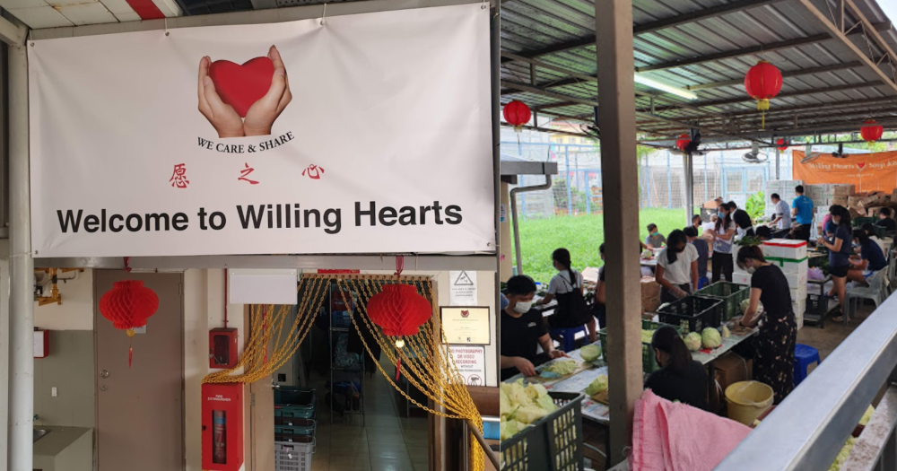
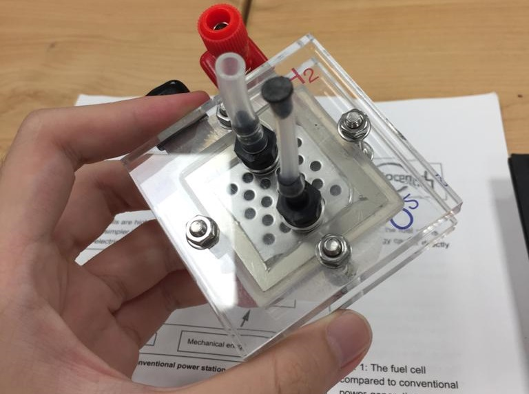
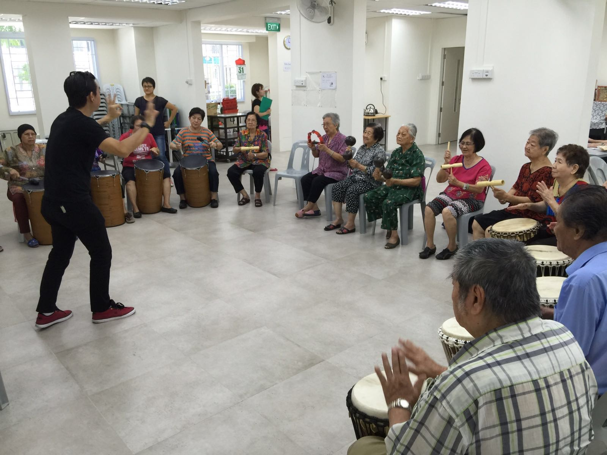
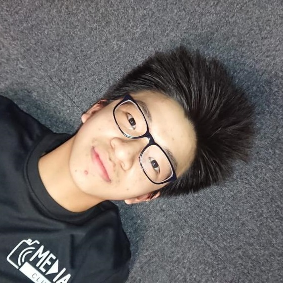

About Me and What I Do
Hong Yih's Portfolio
My Past Experiences


NTU MSE
I partook in a camp organised by NTU on material science and engineering, and I learnt alot about the evolved state of material engineering.

Lion's Befrienders
Engaging with the Elderly has allowed me to put myself in their shoes and gain their wisdom1 Month Internship at NCS
The 1 month in NCS has allowed me to learn more about IT in general and what the workforce is like

Hi, my name is Hong Yih and I am currently studying in Ngee Ann Polytechnic, pursuing a course in Information Technology. Why you may ask, its because I have developed an interest in technology and would like to learn and specialise in the upcoming revolution of technology. I have always been facinated by new and upcoming technology. During my Primary school years, I was a member of the robotics club. I feel like that was the one that sparked my interest in technology in general. Later on, when I DSAed(Direct School Admissions) into the School of Science and Technology(SST), it further made me want to pursue my interest in Technology. I chose SST because of its unique learning style and amazing curriculum. I learnt many skills that I am able to use in the real world such as communication skills and relationships with the knowledge taught with the real world. Being a class chairperson has allowed me to learn countless valueable lessons about respect, responsibility etc. Now I am attending a course in Ngee Ann, which I have specified above where I can pursue my dreams of working in the Technological industry.